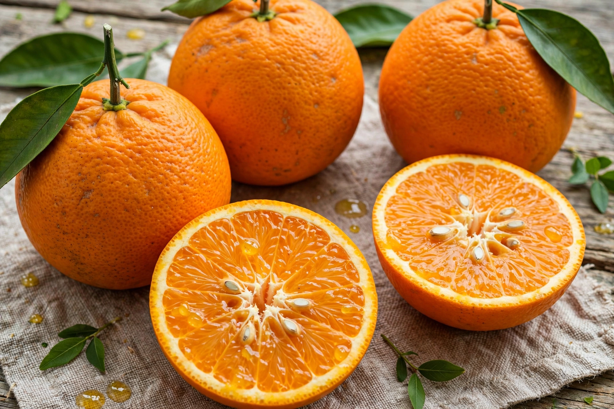

An orange, also called sweet orange to distinguish it from bitter orange, is the fruit of the citrus species Citrus × sinensis in the family Rutaceae. It is a hybrid between the pomelo and the mandarin.
The sweet orange originated in a region encompassing southern China, northeast India, and Myanmar, and was spread by Portuguese and Spanish traders. The word comes via Old French from Arabic nāranj and ultimately Sanskrit.
The fruit is a modified berry (hesperidium) with a tough, aromatic, orange rind and juicy segments. Varieties include the navel, Valencia, blood orange, and Cara Cara. Brazil is the largest producer, much of it processed into juice.
Oranges are a rich source of vitamin C and provide fibre, folate, and potassium. Unlike drupes, oranges develop from a superior ovary with axile placentation.